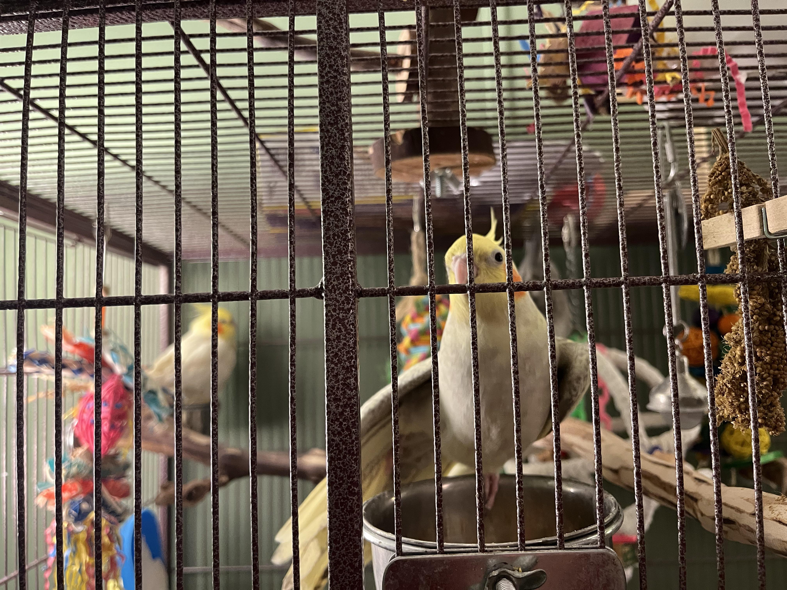
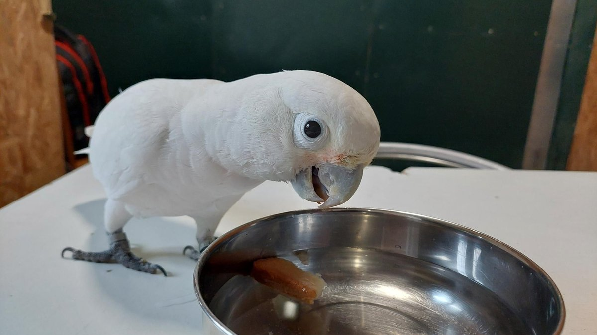

Pochodzenie
Indonezja – wyspy Moluki
Długość
40–50 cm
Długość życia
40–70 lat (czasem więcej)
Tryb życia
Dzienny, bardzo stadny i towarzyski
Cechy szczególne
Silny dziób, duża inteligencja i charakterystyczny biały czub
Zaawansowany poradnik hodowli i szczegółowe informacje o gatunku

Indonezja – wyspy Moluki
40–50 cm
40–70 lat (czasem więcej)
Dzienny, bardzo stadny i towarzyski
Silny dziób, duża inteligencja i charakterystyczny biały czub
Kakadu białe ma całkowicie białe upierzenie oraz ruchomy czub na głowie, który zmienia pozycję w zależności od emocji. Dziób jest bardzo silny i przystosowany do rozłupywania twardych orzechów.

20–28°C (dobrze znosi warunki domowe)
Bardzo wysoka – wymaga codziennej stymulacji
Bardzo głośne – nie dla małych mieszkań
Silnie przywiązuje się do opiekuna, wymaga uwagi

Kakadu białe to jedna z najbardziej emocjonalnych i inteligentnych papug. Potrafi silnie przywiązać się do człowieka, ale źle znosi samotność. Może być hałaśliwa i destrukcyjna, jeśli się nudzi.
Wymaga codziennej interakcji – samotność powoduje stres